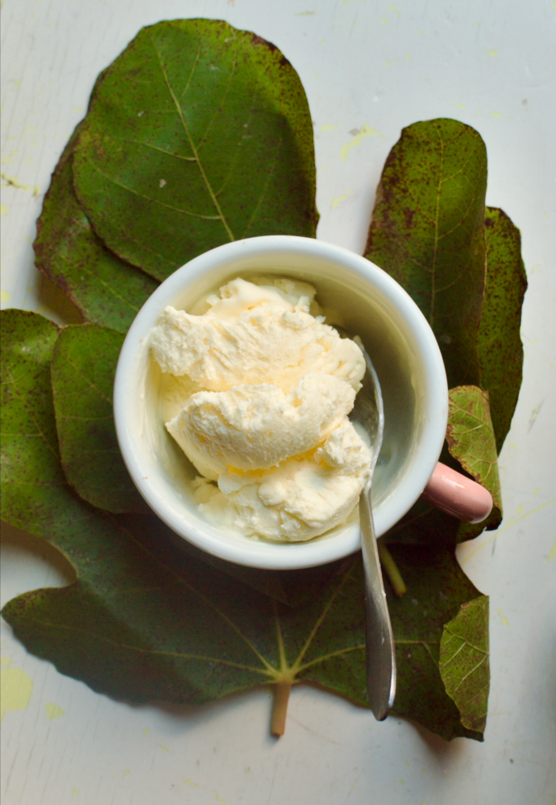
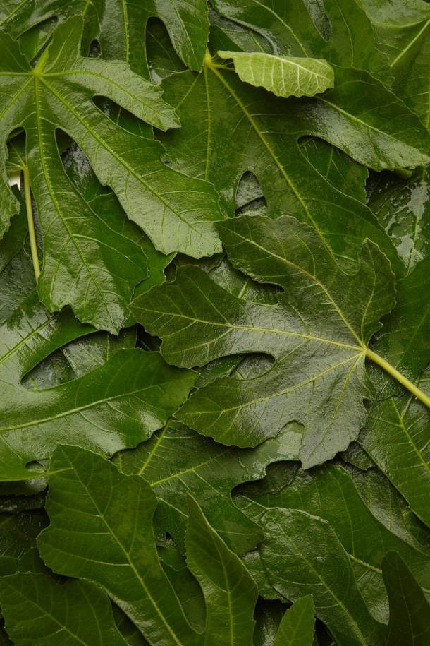
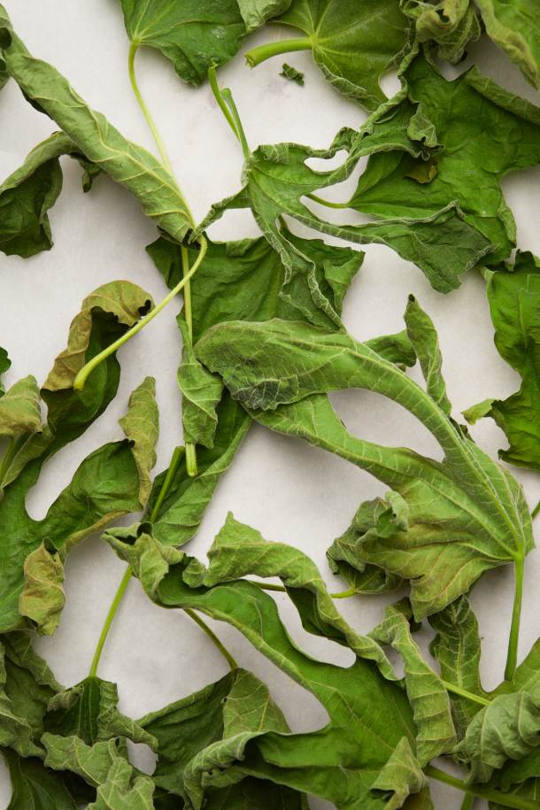
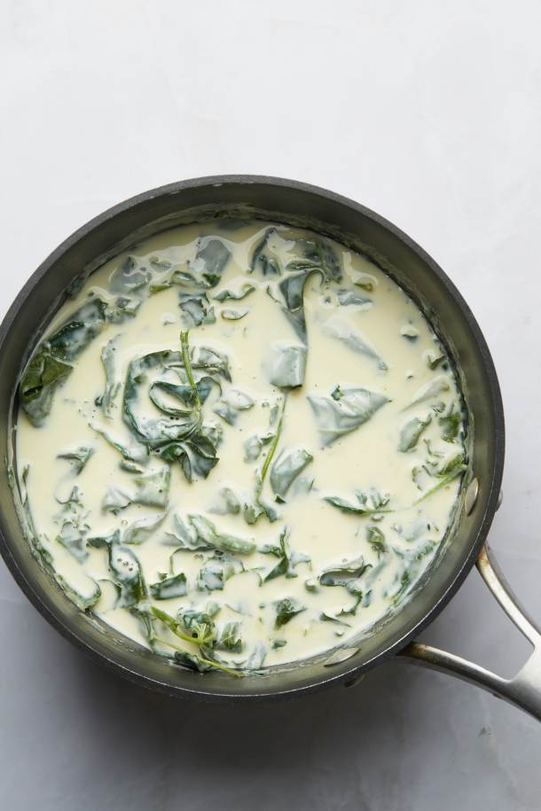
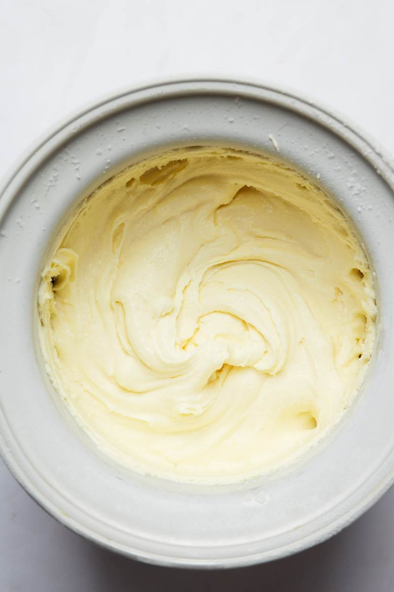
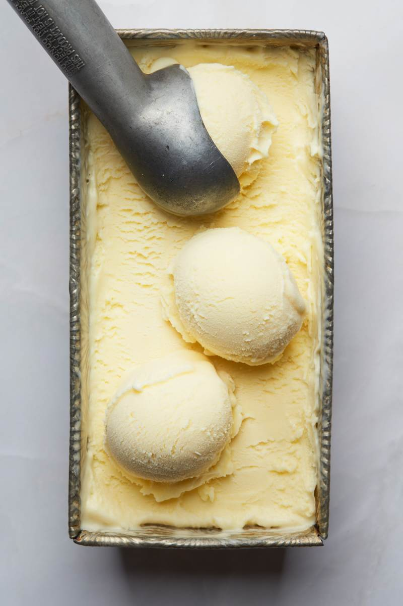
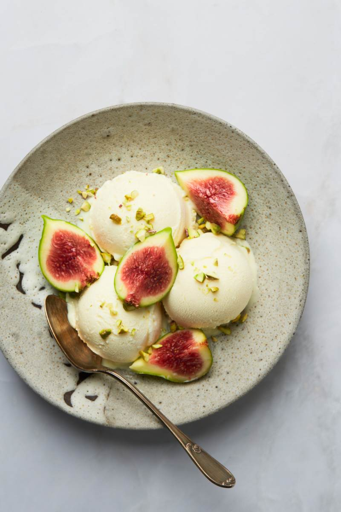

RECIPE 01 / FROZEN DESSERT
Fig leaf
ice cream
Toasted fig leaves infused into a smooth custard. Served cold, with fresh figs and pistachios.
View recipe
BEFORE YOU BEGIN
- Serves
- 8
- Prep
- 15 min
- Cook
- 20 min
- Infuse
- 2–8 hrs
- Chill
- 4+ hrs
- Churn
- 25–30 min
- Freeze
- 4+ hrs
Start the day before. Allow about 30 minutes for the ice bath, plus the infusion, chilling, and freezing time above. Freeze your machine’s bowl in advance if required.
WHAT YOU’LL NEED
Ingredients
Ice cream base
- 2 oz fresh fig leaves, washed and dried
- 2½ cups heavy cream
- 1 cup full-fat milk
- ½ cup granulated sugar, divided
- 4 large egg yolks
To serve
- 1 pint fresh figs, quartered
- ¼ cup chopped pistachios
Equipment
Saucepan, heatproof bowl, whisk, spatula, fine-mesh sieve, ice bath, ice cream machine, and an airtight freezer container.
PREPARATION
Method
01 / INFUSION
Toast the leaves
Prepare the leaves: wash and dry them thoroughly. Heat the oven to 325°F. Toast the fig leaves directly on the center rack for about 8 minutes, until dry and fragrant but not burned.
Warm the dairy
Warm the milk, cream, and ¼ cup sugar over low heat. Crumble in the toasted leaves and keep warm for 5 minutes without letting the mixture boil.
Let it steep
Remove from heat, cover, and steep for at least 2 hours. For a stronger infusion, chill and steep overnight, up to 8 hours.


02 / CUSTARD
Strain the infusion
Strain the infused dairy through a fine-mesh sieve into a clean saucepan, remove the leaves, and gently bring the dairy back to a simmer.
Temper the yolks
Whisk the egg yolks with the remaining sugar until pale. Slowly whisk in hot cream in ¼-cup additions to temper the yolks, then return everything to the saucepan.
Cook the custard
Cook over medium-low heat, stirring constantly, until the custard thickens enough to coat a spatula, about 15 minutes. Avoid boiling the custard.
Strain once more
Strain the cooked custard through a fine-mesh sieve into a clean heatproof container.
Cool and chill
Cool the base in an ice bath for approximately 30 minutes, then refrigerate for at least 4 hours or overnight.

03 / FINISH
Churn
Churn in an ice cream machine until soft-serve texture, about 25–30 minutes.
Freeze until firm
Transfer to a freezer container, press parchment against the surface, seal, and freeze until firm, at least 4 hours.
Scoop and serve
Serve with quartered fresh figs and chopped pistachios.



STORAGE / INGREDIENT NOTES
Recipe notes
Choose the leaves carefully
Use young, undamaged fig leaves and wash them well. The leaves are removed after infusion. Fresh figs are for serving, not a substitute for the leaves.
Keep the sugar divided
Use ¼ cup in the dairy and the remaining ¼ cup with the yolks. This is a churned custard recipe; a no-churn version has not been tested for this project.
Make it your own
Pistachios are optional. Toasted coconut is another serving option. The base contains dairy and eggs; the pistachio topping contains tree nuts.
Store for another day
Keep in an airtight freezer container with parchment pressed against the surface. Enjoy within two weeks for the best texture; the recipe source lists up to one month of freezer storage. Add fresh figs and toppings just before serving.